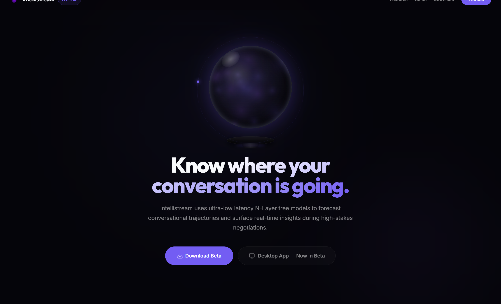

Intellistream

Intellistream Machine Intuition is a real-time conversation intelligence tool that uses Machine Learning models & AI to analyze live conversations, predict conversational trajectories, and provide strategic insights as you speak.
It supports both in-person meetings (microphone) and remote meetings (Google Meet/Zoom via a bot URL).
Free tier: Available on the website (see link above).
- Getting started + quick setup steps
- Configuration (API key, model, audio input)
- Practical troubleshooting